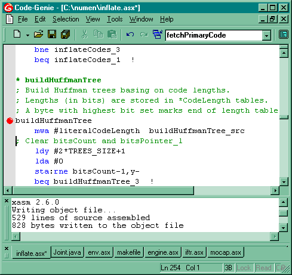

xasm is a 6502 cross-assembler. It is mainly targeted at Atari 8-bit computers, but it can be also used for programming Atari 2600/5200/Lynx, Commodore C64, Apple ][ and others. xasm is freeware.
Version 3.0.0 is a complete rewrite from the x86 assembly language to the D programming language. xasm is now available for Linux.
Although xasm does not support user-defined macros, it has a rich set of built-in facilities.
Here is some typical 6502 code (also valid in xasm):
lda #<dest
sta ptr
lda #>dest
sta ptr+1
ldx #192
do_line
ldy #39
do_byte
lda pattern,y
sta (ptr),y
dey
bpl do_byte
lda #40
clc
adc ptr
sta ptr
bcc skip
inc ptr+1
skip
dex
bne do_line
And here is the same code rewritten in a xasm-specific way:
mwa #dest ptr
ldx #192
do_line
ldy #39
mva:rpl pattern,y (ptr),y-
lda #40
add:sta ptr
scc:inc ptr+1
dex:bne do_line
Although xasm comes with no editor, the documentation describes integration (syntax highlighting and single-keystroke compilation) with a few general-purpose text editors. Here is a screenshot of the Code-Genie editor:

| File | Size | Description |
|---|---|---|
| xasm-3.0.0-win32.zip | 98 KB | xasm 3.0.0 for Windows |
| xasm-3.0.0-linux.tar.gz | 128 KB | xasm 3.0.0 for Linux |
| xasm-3.0.0-src.zip | 16 KB | xasm 3.0.0 source code |
| xasm261.zip | 25 KB | xasm 2.6.1 for DOS/Windows |
| xasm252.zip | 38 KB | xasm 2.5.2 for DOS/Windows (includes X-BOOT, X-LOAD and X-HEAD) |
Hosted by Atari Area